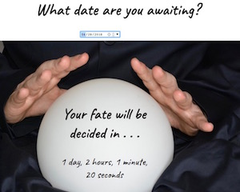
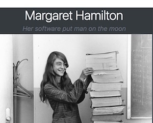

about me
- I'm transitioning into tech after several-year stints as a children's book editor and career counselor. I've dabbled with code and software all my life, including in my career: I volunteer to work on websites and coach co-workers through tech-related tasks.
- Now I'm diving in! I won a scholarship through Grow with Google toward a Front-End Nanodegree through Udacity, anticipated October 2018.
- My editorial abilities and communication skills drive my code and design. I focus on accessibility, usability, and user experience.

featured projects
Feeling creative? This artistic playground uses jQuery to allow users to pick thread and canvas colors and stitch a digital sampler.

Fortune Teller Countdown
I created this countdown clock while waiting to learn if I was accepted into the second phase of the Nanodegree program.
 Pure CSS Gameboy
Pure CSS Gameboy
This was a challenge labor of love to increase my familiarity with CSS.

Biography Page
Free Code Camp asked me to create a page using Bootstrap. I picked a pretty cool subject.